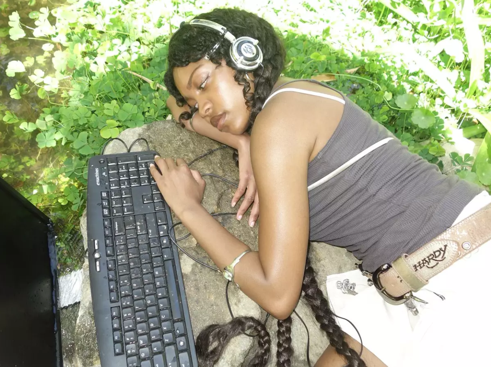

Manifiesto:
Repensar la computación desde lo situado.
Como estudiante ya por casi 4 años de la licenciatura en ciencias de la computación, siempre he escuchado que la computación es descrita como un área puramente lógica y objetiva; no es que sea una descripción equivocada, es cierto que las bases de la computación formal están dadas desde la lógica y las matemáticas pero este conocimiento fue y es producido por personas, seres vivos pensantes situados en un contexto social e histórico específico.
Sobre todo cuando hablamos de ciencia, los contextos de sus creadores (o quienes se dicen serlo) han sido históricamente blancos y masculinos. Entonces, si a lo largo de la historia los espacios científicos se han conformado en su mayoría de hombres blancos, ¿en qué momento se considera a los demás grupos sociales dentro de la perspectiva científica?

Desde que soy adolescente he mantenido una postura muy marcada respecto al feminismo y casi siempre estuve rodeada de mujeres que compartían mis mismos ideales. Al entrar a la licenciatura me topé con pared. Obviamente no podía esperar toparme con chicos que tuvieran perspectiva de género en una carrera en donde aproximadamente el 98% de los estudiantes eran hombres.
Al avanzar en los semestres fui conociendo a más personas y ya no solo hablando de feminismo sino en general, puedo decir que la mayoría no suele incluir una postura política en la toma de decisiones. Entonces, asumir la computación como neutral es tomar la postura de decidir no cuestionarse.
Por un tiempo abandoné un poco mis ideales para centrarme en sobrevivir en un espacio que no sentía propio ni cómodo. No creo que esta sea una experiencia que deba ser normal. Por eso, desde este espacio quiero plantear la idea de que la computación debe empezar a ser propia de todos y no solo de unos cuantos.
Al aprender a programar también se aprende una forma muy particular de percibir nuestro entorno: clasificar y ordenar para optimizar. Y aunque te suene absurdo, esto viene de un sistema que necesita oprimir para funcionar.
Repensar la computación desde perspectivas que nunca han sido consideradas legítimas por la universalidad científica es una necesidad.
Repensar la computación implica incomodarla y cuestionarla para que pueda ser reconstruida.
« Volver al inicio